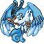
#426 · Other
Articuno
Where: Seafoam Islands B1F (Kanto)
Static Lv50 encounter in Seafoam Islands B1F. The checked event does not require a weather condition.
Source-documented; Alpha 5 gameplay QA pending

Where and how to find legendary Pokémon in PRU, including the entire RELICS quest and the final Golden Ho-Oh encounter.
The scientist gives a new clue after each RELIC is caught. Return to the Ruins of Alph Lab as you progress. I-Unown uses Unown’s existing Pokédex entry; Ancient Guardian Dragonite is not a RELIC.
Beat the Johto League. Visit the Ruins of Alph Lab scientist to begin.
Power Plant, Route 10; investigate the old generator.
Mt. Mortar, farthest cavern.
Whirl Islands, deepest chamber.
Ruins of Alph, Eye statue in the lower ruins.
Ilex Forest Shrine.
Cerulean Cape, at the far end of Route 25.
Far-right final stone statue in the lower Ruins of Alph.
After all seven RELICS plus Elite 20, speak to Oak on Mt. Silver Summit.
Search by name or area. Mark your catches as you go; ticks are stored only on your own device.

Where: Seafoam Islands B1F (Kanto)
Static Lv50 encounter in Seafoam Islands B1F. The checked event does not require a weather condition.
Source-documented; Alpha 5 gameplay QA pending
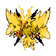
Where: Route 10, Power Plant area (Kanto)
Static Lv50 encounter on Route 10 near the Power Plant. The checked event does not require a weather condition.
Source-documented; Alpha 5 gameplay QA pending
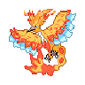
Where: Mt. Silver 1F — Moltres Room
Static Lv50 encounter in the Mt. Silver first-floor Moltres Room; not a roaming Kanto encounter.
Source-documented; Alpha 5 gameplay QA pending
Where: Cerulean Cave B2F
Find the scripted encounter. Exact Alpha 5 access prerequisite not tested.
Source-documented; Alpha 5 gameplay QA pending
Where: Faraway Island Interior
Source lists a scripted encounter. Method of travelling here not tested.
Source-documented; Alpha 5 gameplay QA pending
Where: Cerulean Cave B2F
Source lists a scripted encounter here; exact trigger not tested.
Source-documented; Alpha 5 gameplay QA pending
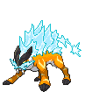
Where: Power Plant — Route 10
After becoming Johto Champion, speak to the Ruins of Alph scientist. Investigate the old generator, catch Raikou and return to the lab.
Confirmed in Alpha 5 ROM dialogue
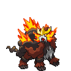
Where: Mt. Mortar — deepest cavern
After Raikou, enter Mt. Mortar and reach its farthest cavern. Return to the lab after catching.
Confirmed in Alpha 5 ROM dialogue
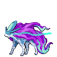
Where: Cerulean Cape — far end of Route 25
Follow the lab clue to the far end of Route 25. NOT Ruins of Alph.
Confirmed in Alpha 5 ROM dialogue
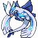
Where: Whirl Islands — deepest chamber
After Entei, reach the deepest chamber of Whirl Islands.
Confirmed in Alpha 5 ROM dialogue
Where: Mt. Silver Summit
Golden Ho-Oh finale: catch all seven RELICS, complete the Elite 20 and meet Professor Oak on the summit.
Source-documented; Alpha 5 gameplay QA pending
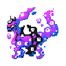
Where: Ruins of Alph — lower ruins
After six RELICS, inspect the final stone statue at the far-right end.
Confirmed in Alpha 5 ROM dialogue
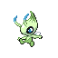
Where: Ilex Forest Shrine
After I-Unown, follow the Alpha 5 ROM-confirmed clue: Celebi awaits in Ilex Forest. Examine the old forest shrine.
Confirmed in Alpha 5 ROM dialogue
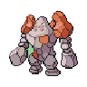
Where: Sinjoh Ruins — Regirock Room
Find the Regirock chamber. Entrance conditions require Alpha 5 playtesting.
Source-documented; Alpha 5 gameplay QA pending
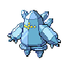
Where: Sinjoh Ruins — Regice Room
Find the Regice chamber. Entrance conditions require Alpha 5 playtesting.
Source-documented; Alpha 5 gameplay QA pending
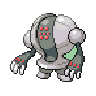
Where: Sinjoh Ruins — Registeel Room
Find the Registeel chamber. Entrance conditions require Alpha 5 playtesting.
Source-documented; Alpha 5 gameplay QA pending
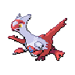
Where: Roaming Kanto / Southern Island
After the Steven encounter at Vermilion City, one of Latias or Latios becomes a Kanto roamer. The alternate scripted Southern Island encounter depends on access flags. Weather not verified as a trigger.
Source-documented; Alpha 5 gameplay QA pending
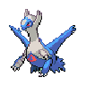
Where: Roaming Kanto / Southern Island
After the Steven encounter at Vermilion City, one of Latias or Latios becomes a Kanto roamer. The alternate scripted Southern Island encounter depends on access flags. Weather not verified as a trigger.
Source-documented; Alpha 5 gameplay QA pending
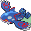
Where: Seafoam Islands — Secret Cave
Source-documented encounter; Primal form is permanent in PRU.
Source-documented; Alpha 5 gameplay QA pending
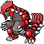
Where: Mt. Silver 1F — Legendary Room
Source-documented encounter; Primal form is permanent in PRU.
Source-documented; Alpha 5 gameplay QA pending
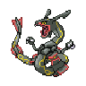
Where: Dragon's Den — Storm Shrine
Source-documented encounter; permanent Mega form in PRU.
Source-documented; Alpha 5 gameplay QA pending
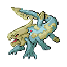
Where: Not yet verified
Exact catchable location and unlock conditions not verified from this test ROM.
Exact location not confirmed
Where: Mt. Moon Square — White Rock
Touch the White Rock outside Mt. Moon. A time-of-day branch controls the summoning scene. Catch Jirachi (Lv50) before seeking Astrachi.
Source-documented; Alpha 5 gameplay QA pending
Where: Mt. Moon Square — White Rock
After catching Jirachi, interact with the same White Rock again to summon the separate Lv70 Astrachi. It appears at the pool; the capture is one-time.
Source-documented; Alpha 5 gameplay QA pending
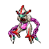
Where: Birth Island — triangular rock puzzle
Travel to Birth Island and complete the triangular-rock puzzle to trigger Deoxys. Exact travel unlock is still awaiting Alpha 5 playtesting.
Source-documented; Alpha 5 gameplay QA pending
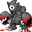
Where: Ruins of Alph — Eye statue
The I clue sends you below Ruins of Alph to the Eye statue after Lugia. This form shares the Unown Pokédex number.
Confirmed in Alpha 5 ROM dialogue
Where: Tin Tower Roof — Kimono Girls ceremony
Special non-catchable Lv60 Guardian battle during the Kimono Girls ceremony. This is the approved blue-crystal Elite Redux Mega Dragonite artwork, not standard Dragonite.
Source-documented; Alpha 5 gameplay QA pending
No matches.